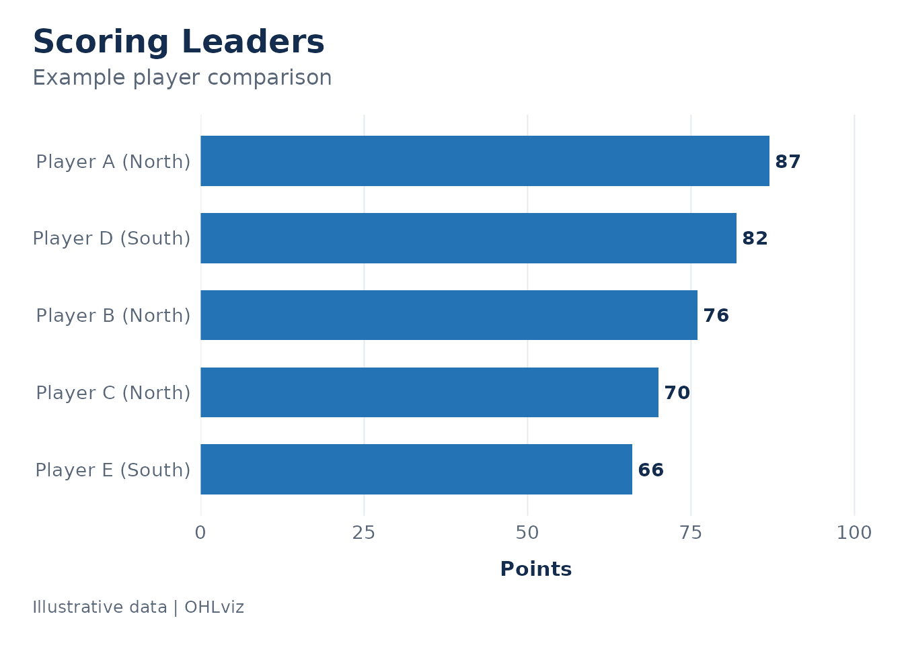
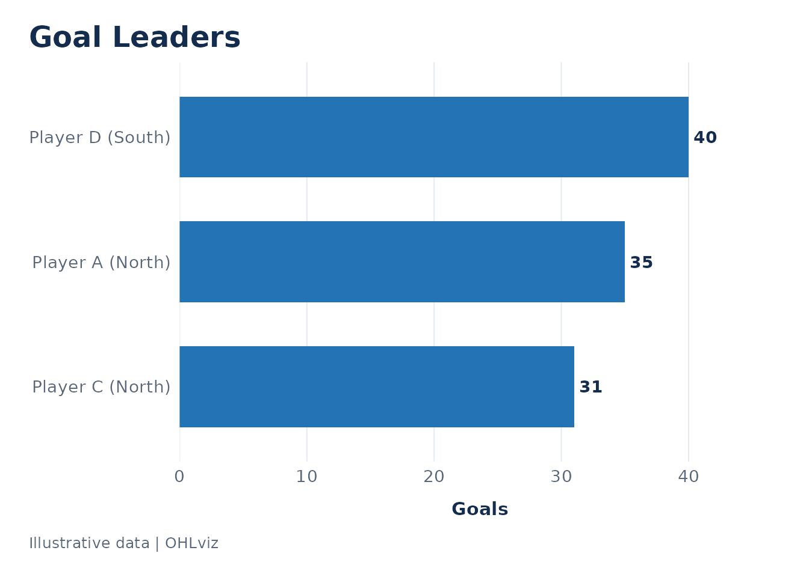
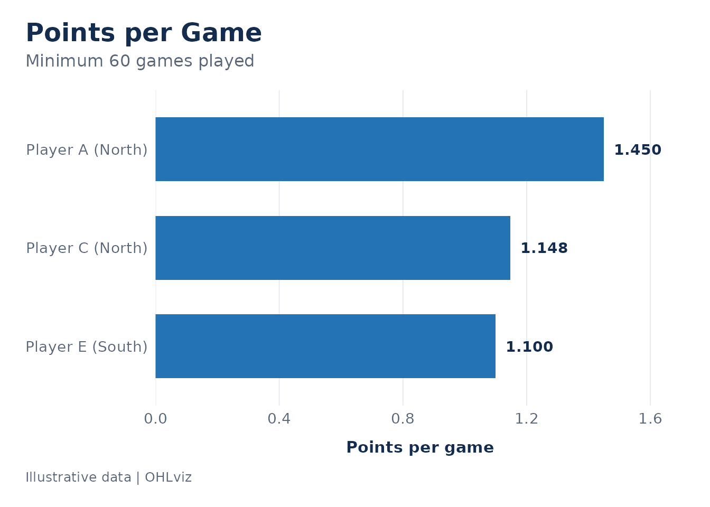
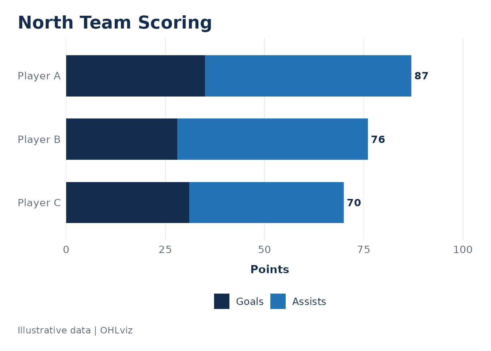
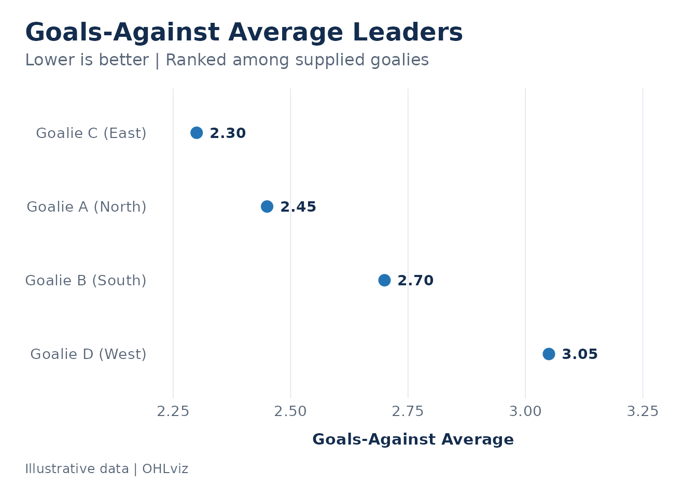
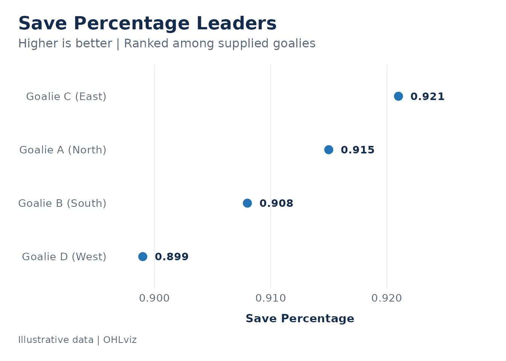
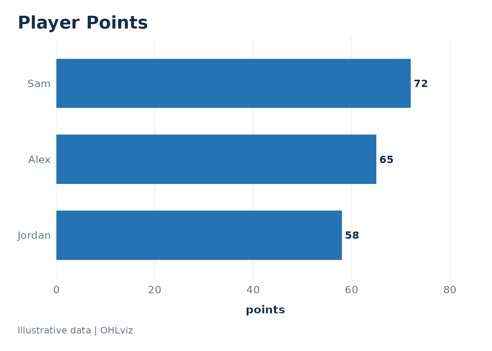
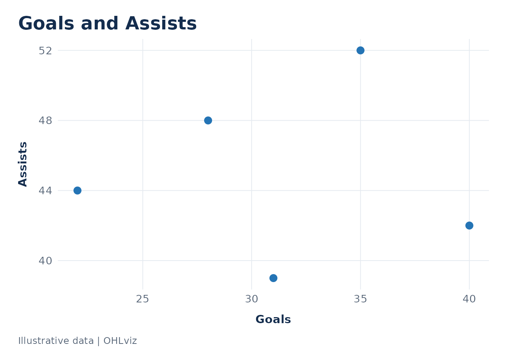

Overview
OHLviz creates consistent, customizable charts for Ontario Hockey League data. Its plotting functions accept data frames and return ggplot objects.
OHLpkg handles data retrieval, preparation, filtering, and analysis. OHLviz handles visualization. You can also use data from other sources by specifying column names.
Prepare your data
Supply one season and a consistent reporting scope per chart. Apply qualification filters before plotting, and resolve duplicate records or player team splits.
The following fictional data uses OHLpkg’s column names:
skaters <- data.frame(
Name = c("Player A", "Player B", "Player C", "Player D", "Player E"),
Team = c("North", "North", "North", "South", "South"),
GP = c(60, 58, 61, 59, 60),
G = c(35, 28, 31, 40, 22),
A = c(52, 48, 39, 42, 44)
)
skaters$PTS <- skaters$G + skaters$A
skaters[["Pts/G"]] <- skaters$PTS / skaters$GPThese calculations happen before plotting. OHLviz does not retrieve data or automatically calculate a points-per-game column.
Plot scoring leaders
By default, plot_scoring_leaders() ranks players by
PTS.
plot_scoring_leaders(
skaters,
n = 5,
title = "Scoring Leaders",
subtitle = "Example player comparison",
caption = "Illustrative data | OHLviz"
)
Change stat to select another non-negative numeric
column:
plot_scoring_leaders(
skaters,
stat = "G",
n = 3,
title = "Goal Leaders",
caption = "Illustrative data | OHLviz"
)
Common choices include "PTS", "G",
"A", and "Pts/G".
Players are ranked highest first. Ties preserve input row order, and
n limits the chart to that many rows. If fewer players are
available, the chart displays all available players.
For rate statistics, choose an appropriate qualification threshold before plotting:
qualified_skaters <- skaters[
!is.na(skaters$GP) & skaters$GP >= 60,
,
drop = FALSE
]
plot_scoring_leaders(
qualified_skaters,
stat = "Pts/G",
title = "Points per Game",
subtitle = "Minimum 60 games played",
caption = "Illustrative data | OHLviz"
)
Compare scoring within a team
plot_team_scoring() displays goals and assists as
stacked bars. Players are ranked by their combined total.
plot_team_scoring(
skaters,
team = "North",
title = "North Team Scoring",
caption = "Illustrative data | OHLviz"
)
The total at the end of each bar is calculated as goals plus assists.
The function does not require a separate PTS column.
If your data contains exactly one named team, you can omit
team:
north_skaters <- skaters[skaters$Team == "North", ]
plot_team_scoring(north_skaters)Selecting a team filters rows. It does not separate a traded player’s season totals into statistics earned with each team. Supply team-specific statistics when that distinction matters.
Duplicate player names within the selected team produce an error. Resolve duplicate records, or provide distinct labels when two different players share a name.
Compare goalies
Create a fictional goalie dataset:
goalies <- data.frame(
Name = c("Goalie A", "Goalie B", "Goalie C", "Goalie D"),
Team = c("North", "South", "East", "West"),
GP = c(42, 45, 38, 40),
GAA = c(2.45, 2.70, 2.30, 3.05),
W = c(25, 30, 22, 18)
)
goalies[["SAV%"]] <- c(0.915, 0.908, 0.921, 0.899)The goalie function supports three metrics:
stat |
Metric | Ranking |
|---|---|---|
"SAV%" |
Save percentage, the default | Highest first |
"GAA" |
Goals-against average | Lowest first |
"W" |
Wins | Highest first |
plot_goalie_leaders(
goalies,
stat = "GAA",
title = "Goals-Against Average Leaders",
caption = "Illustrative data | OHLviz"
)
Goalie charts use dots. Their horizontal axes are fitted to the selected values and do not necessarily start at zero.
Qualification filters belong upstream. These charts rank the supplied goalies; they do not automatically apply official league qualification rules.
Save percentage units
By default, save percentage inputs must be proportions such as
0.915.
plot_goalie_leaders(
goalies,
stat = "SAV%",
title = "Save Percentage Leaders",
caption = "Illustrative data | OHLviz"
)
If your source uses values such as 91.5, specify
"percent" explicitly:
percent_goalies <- goalies
percent_goalies[["SAV%"]] <- percent_goalies[["SAV%"]] * 100
plot_goalie_leaders(
percent_goalies,
save_pct_scale = "percent"
)OHLviz does not guess the input units. Both formats are displayed as proportions with three decimal places. GAA uses two decimal places, and wins use whole numbers.
Use different column names
OHLviz does not require data to come from OHLpkg.
For a scoring leaderboard, specify the name and statistic columns.
Use team_col = NULL when no team column is available:
custom_skaters <- data.frame(
player = c("Alex", "Sam", "Jordan"),
points = c(65, 72, 58)
)
plot_scoring_leaders(
custom_skaters,
stat = "points",
player_col = "player",
team_col = NULL,
title = "Player Points",
caption = "Illustrative data | OHLviz"
)
For goalie charts, stat identifies the metric and
determines ranking and formatting. stat_col identifies the
column containing its values:
custom_goalies <- data.frame(
goalie = c("Alex", "Sam"),
average = c(2.80, 2.20)
)
plot_goalie_leaders(
custom_goalies,
stat = "GAA",
stat_col = "average",
player_col = "goalie",
team_col = NULL
)Customize your charts
All plotting functions support title,
subtitle, and caption.
Scoring and goalie leaderboards use colour. Team scoring
charts use goals_colour and
assists_colour.
plot_team_scoring(
skaters,
team = "North",
goals_colour = "#142D4E",
assists_colour = "#4FA3D1",
caption = "Illustrative data | OHLviz"
)Returned ggplot objects support additional customization:
p <- plot_scoring_leaders(skaters)
p +
ggplot2::labs(title = "My Scoring Leaderboard") +
ggplot2::theme(
plot.title = ggplot2::element_text(size = 18)
)Use the theme independently
theme_ohl() can also style your own ggplot2 charts:
ggplot2::ggplot(
skaters,
ggplot2::aes(x = G, y = A)
) +
ggplot2::geom_point(
colour = "#2474B5",
size = 3
) +
ggplot2::labs(
title = "Goals and Assists",
x = "Goals",
y = "Assists",
caption = "Illustrative data | OHLviz"
) +
theme_ohl()
Use base_size and base_family to customize
typography. The default family is "sans" for
portability.
The theme controls text, backgrounds, spacing, and gridlines. Data colours are set separately through chart arguments or colour scales.
Export a chart
Store the plot and save it with ggplot2::ggsave():
p <- plot_scoring_leaders(
skaters,
caption = "Illustrative data | OHLviz"
)
ggplot2::ggsave(
filename = "scoring-leaders.png",
plot = p,
width = 10,
height = 7,
units = "in",
dpi = 300,
bg = "white"
)For a PDF, change the filename extension to .pdf.
Increase chart height when displaying more players. Increase width when player names, team names, or titles need additional room. Inspect the exported chart at its intended display size.
Handle input problems
The functions check required columns and numeric statistic types.
- Missing or non-finite scoring values are omitted with a warning.
- If no usable values remain, plotting stops with an error.
- Negative scoring values are rejected.
- Team goals, team assists, and goalie wins must be whole numbers.
- Missing or blank player names in otherwise usable rows are rejected.
Resolve data problems upstream rather than replacing missing statistics with zero unless zero is the correct value.
Connect to OHLpkg
With OHLpkg installed, retrieve and filter your data before plotting.
The following example is not executed when this guide builds because it requires a live data connection:
skater_data <- OHLpkg::get_Stats(
season_name = "2026 Season",
min_games = 10
)
plot_scoring_leaders(
skater_data,
n = 10,
subtitle = "2026 Season | Minimum 10 games played",
caption = "Data: OHLpkg | Visualization: OHLviz"
)
goalie_data <- OHLpkg::get_GoalieStats(
season_name = "2026 Season",
min_games = 10
)
plot_goalie_leaders(
goalie_data,
stat = "GAA",
n = 10,
subtitle = "2026 Season | Minimum 10 games | Lower is better",
caption = "Data: OHLpkg | Visualization: OHLviz"
)Check the units of save percentage in your source before plotting it. OHLpkg is optional for using OHLviz; the plotting functions operate directly on supplied data frames.